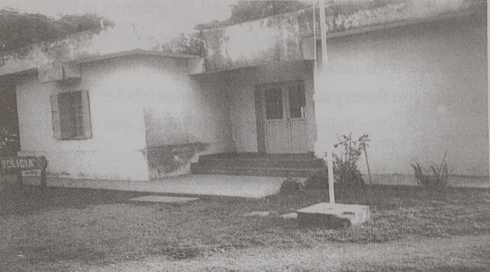

1883
Establecimiento de la Policía
En 1883, debido al creciente tránsito y la afluencia de personas, se estableció la policía en Sarmiento. No obstante, su edificio actual se construyó en 1926, marcando un hito en el desarrollo institucional del pueblo.

Edificio actual de La Policía